ข่าวประชาสัมพันธ์


ภาพกิจกรรมของวิทยาลัย
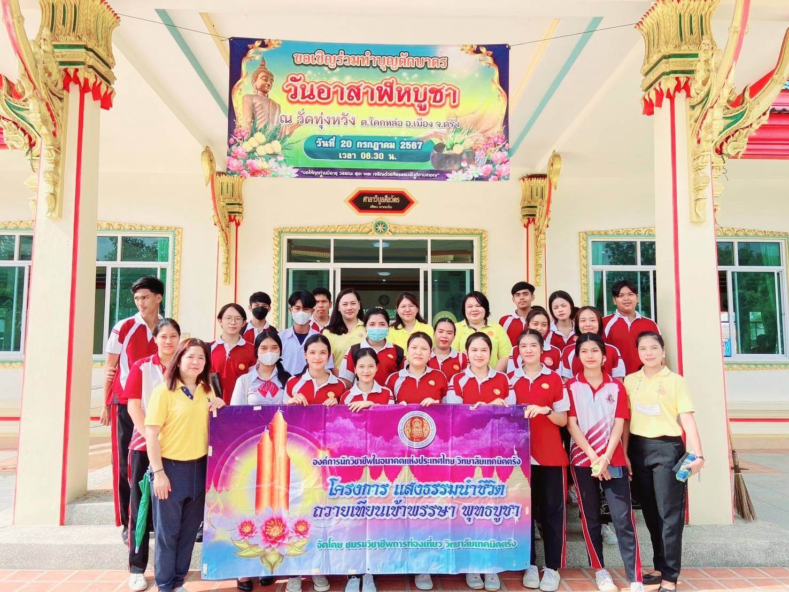
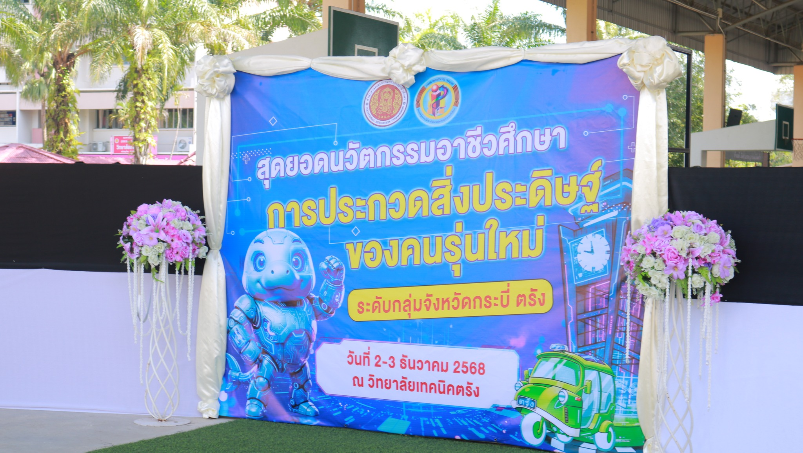
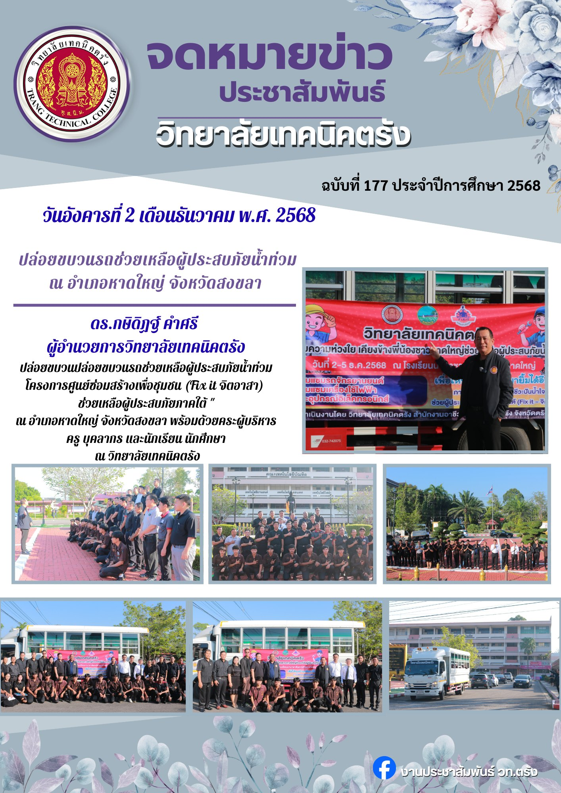
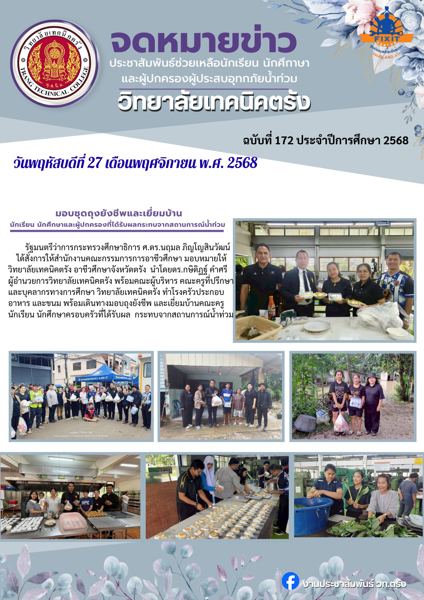
ข้อมูลและรายละเอียดวิทยาลัย
วิทยาลัยเทคนิคตรัง สังกัดสถาบันการอาชีวศึกษาภาคใต้ 2 สำนักงานคณะกรรมการการอาชีวศึกษา กระทรวงศึกษาธิการ มุ่งเน้นผลิตและพัฒนากำลังคนให้มีคุณภาพ มีทักษะวิชาชีพสอดคล้องกับความต้องการของตลาดแรงงานและการพัฒนาประเทศ
ปรัชญาและวิสัยทัศน์
- ปรัชญา: ทักษะเด่น เน้นคุณธรรม นำวิชาการ ชำนาญวิชาชีพ
- วิสัยทัศน์: เป็นสถานศึกษาที่มุ่งผลิตและพัฒนากำลังคนอาชีวศึกษาให้มีสมรรถนะวิชาชีพ ได้มาตรฐานสากล สอดคล้องกับการพัฒนาเศรษฐกิจและสังคม
- อัตลักษณ์: บริการดี มีจิตอาสา
ประวัติโดยย่อ
เริ่มต้นจากการรวม "โรงเรียนการช่างตรัง" และ "โรงเรียนอาชีวศึกษาตรัง" เมื่อปี พ.ศ. 2521 และได้รับการยกฐานะเป็น "วิทยาลัยเทคนิคตรัง" ในปี พ.ศ. 2523 ปัจจุบันเปิดสอนในระดับประกาศนียบัตรวิชาชีพ (ปวช.) ประกาศนียบัตรวิชาชีพชั้นสูง (ปวส.) และระดับปริญญาตรี (สายเทคโนโลยีหรือสายปฏิบัติการ)
สาขาที่เปิดสอน
วิทยาลัยเทคนิคตรัง เปิดทำการเรียนการสอนในหลากหลายสาขาวิชา แบ่งออกเป็นหมวดวิชาหลัก ดังนี้
⚙️ ช่างอุตสาหกรรม
สาขาวิชาช่างยนต์
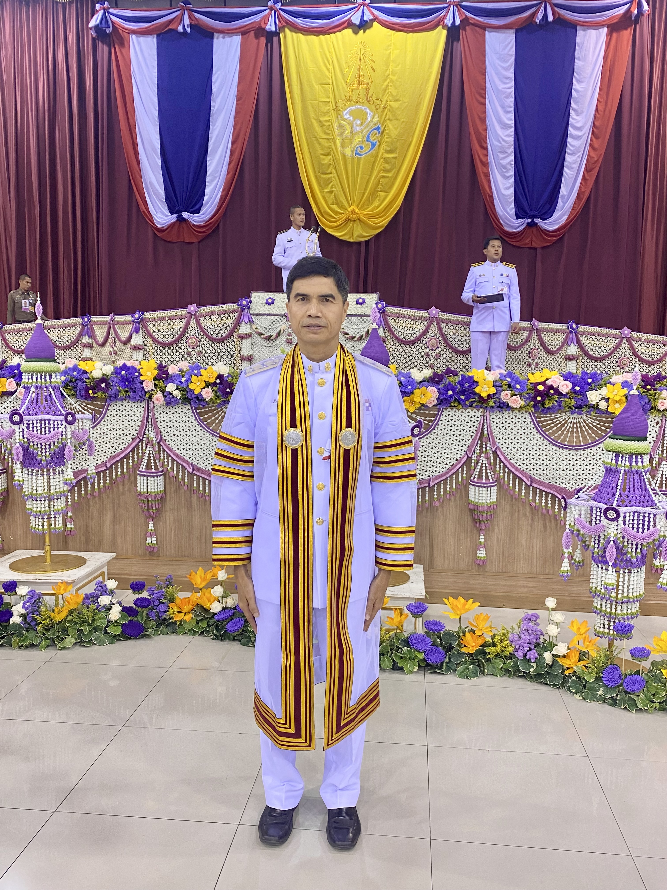
นายชนม์สวัสดิ์ อินนุรักษ์
หัวหน้าแผนกวิชาช่างยนต์
สาขาวิชาช่างกลโรงงาน
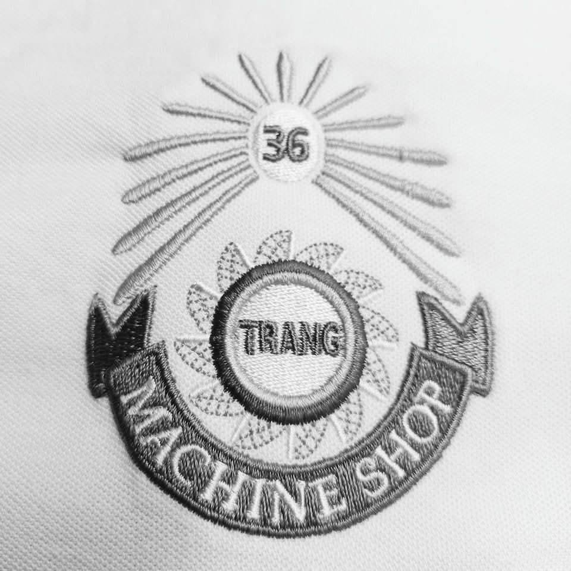
นายนิกร ยิ้มสุด
หัวหน้าแผนกวิชาช่างกลโรงงาน
สาขาวิชาช่างไฟฟ้ากำลัง
นายกฤตนัน น้ำเจ็ด
หัวหน้าแผนกวิชาช่างไฟฟ้ากำลัง
สาขาวิชาช่างอิเล็กทรอนิกส์
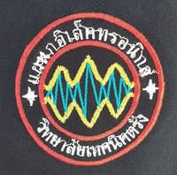
นายธีระพล บุญชัย
หัวหน้าแผนกวิชาช่างอิเล็กทรอนิกส์
สาขาวิชาช่างก่อสร้าง
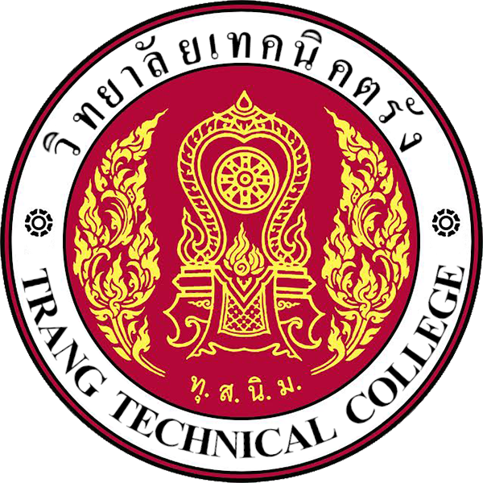
นายจุมพล ตันติบรรพกุล
หัวหน้าแผนกวิชาช่างก่อสร้าง
สาขาวิชาช่างโยธา
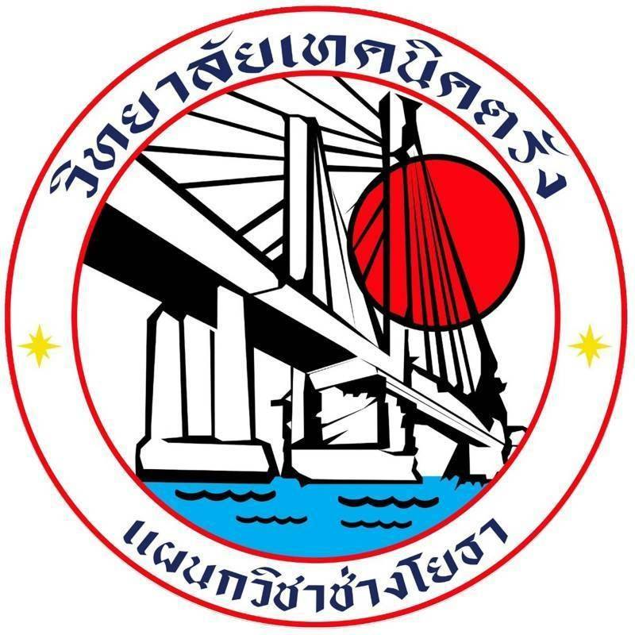
นายวันโชค บุญย่อง
หัวหน้าแผนกวิชาช่างโยธา
สาขาวิชาสถาปัตยกรรม
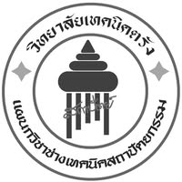
นางสาวนิศารัตน์ วัฒนกุล
หัวหน้าแผนกวิชาสถาปัตยกรรม
สาขาวิชาเทคโนโลยีการยางฯ
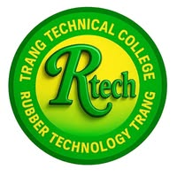
นายสรุศักดิ์ เทพทอง
หัวหน้าแผนกวิชาเทคโนโลยีการยางฯ
สาขาวิชาช่างเทคนิคคอมพิวเตอร์
นายอนุวัฒน์ สุชาโต
หัวหน้าแผนกวิชาเทคนิคคอมพิวเตอร์
💼 พาณิชยกรรม / บริหารธุรกิจ
สาขาวิชาการบัญชี
นางสาวธรวิรินทร์ พวงสอน
หัวหน้าแผนกวิชาการบัญชี
สาขาวิชาการจัดการสำนักงาน
นางรัตนา เจวรัมย์
หัวหน้าแผนกวิชาการจัดการสำนักงาน
สาขาวิชาการตลาด
นางณัฏฐิกา พัฒนประชากร
หัวหน้าแผนกวิชาการตลาด
สาขาวิชาเทคโนโลยีธุรกิจดิจิทัล
นางอัษฎาพร บัญเมือง
หัวหน้าแผนกวิชาธุรกิจดิจิทัล
✈️ อุตสาหกรรมการท่องเที่ยว
สาขาวิชาการท่องเที่ยว
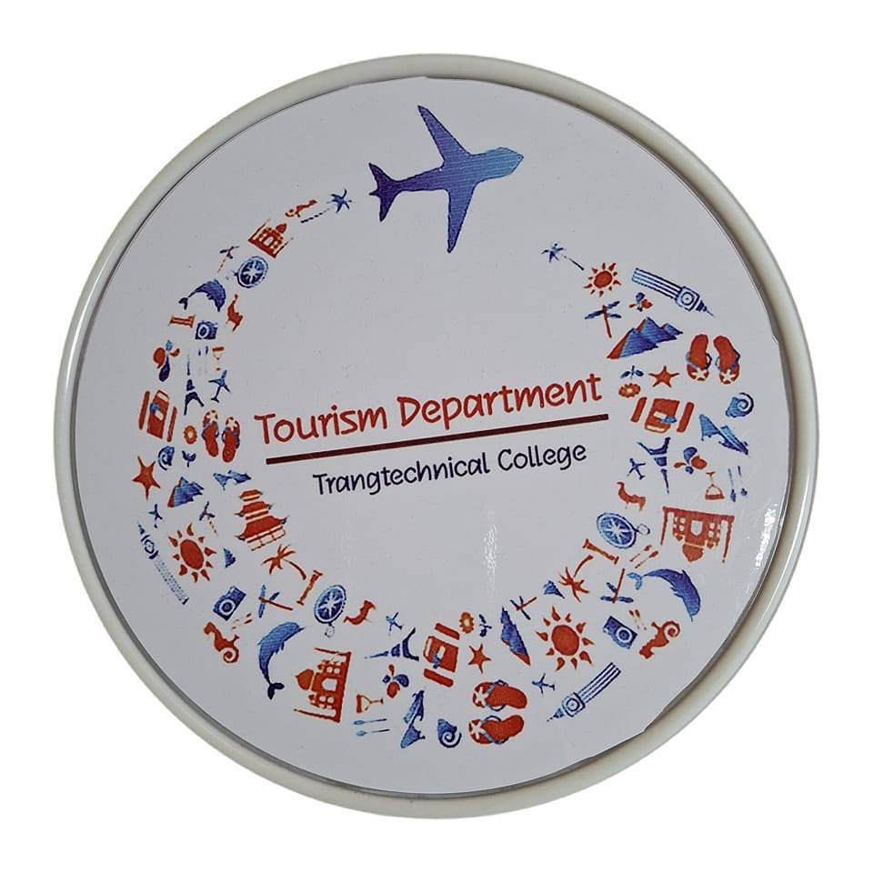
นางจิรภัทร์ อนุกูลพันธ์
หัวหน้าแผนกวิชาการท่องเที่ยว
สาขาวิชาการโรงแรม
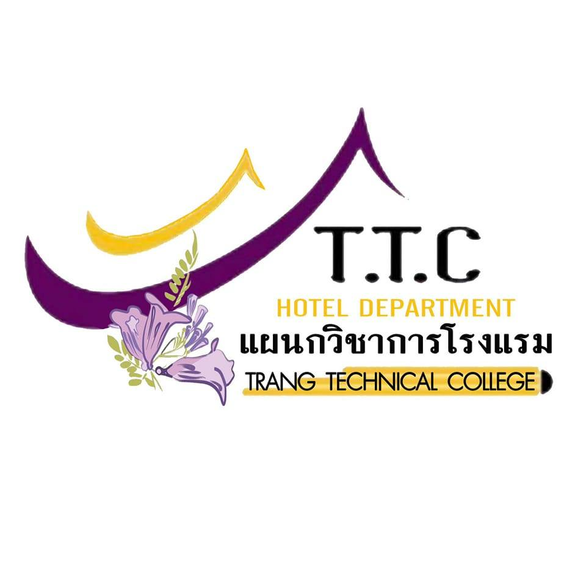

นางสาวอัญชลี เขาพรง
หัวหน้าแผนกวิชาการโรงแรม
🍳 คหกรรม
💻 เทคโนโลยีสารสนเทศ
คณะผู้บริหารสถานศึกษา